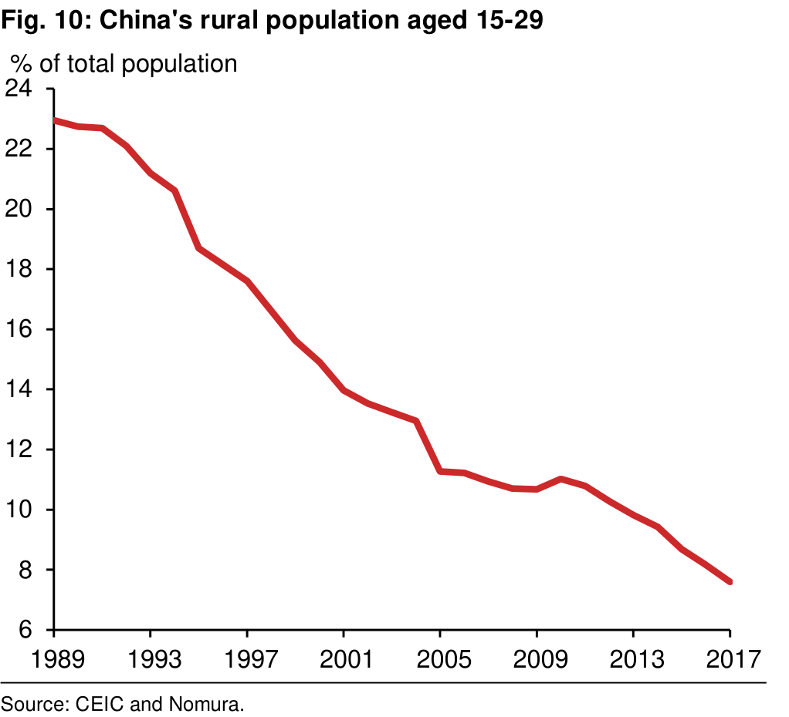

ANCHOR REPORT
Global Markets Research
====================================================================================================
Contents
Executive summary ................................................................................ 4
Introduction............................................................................................. 5
Drivers of food prices .............................................................................. 6
Demand .............................................................................................. 6
Supply ................................................................................................. 8
Box 1: Cobweb cycle: India’s experience ......................................... 10
Box 2: China’s pork prices are surging on the spread of ASF............ 11
The Nomura Food Vulnerability Index................................................... 12
Triggers and amplifiers of a price surge ................................................ 14
Three triggers ................................................................................... 14
Three amplifiers ................................................................................ 16
The 2010-11 surge in food prices redux ............................................... 22
Potential movers and shakers in sovereign CDS and bonds ............. 26
What if food and oil prices part ways? ............................................... 28
Appendix 1: Correlation matrices of monthly changes in prices ............ 29
References ........................................................................................... 30
Recent Special Reports ........................................................................ 31
Hear what our analysts have to say
====================================================================================================
Executive summary
A food price surge is an underappreciated risk
After surging in 2010-11, global food prices have been on a downtrend, but this can quickly change. Structural drivers of food demand – rising EM population and income growth coupled with an increasing appetite for more protein – remain strong. The supply- side of the food equation is also tightening, as the eight-year trend decline in food prices is disincentivising new agricultural investments at a time of decreasing arable land and water supply, and an increasing frequency of extreme weather events. There are hints that global food prices could soon start surging, from the African Swine Fever in China to catastrophic bushfires in Australia to the soaring price of onions in India.
Nomura’s Food Vulnerability Index
We update the Nomura Food Vulnerability Index (NFVI), which objectively estimates a country’s exposure to large food price swings, depending on nominal GDP per capita, the share of food in household consumption and net food imports. Our ranking of 110 economies highlights Libya, Tajikistan, Montenegro, Syria and Algeria as the five economies most vulnerable to a sustained rise in food prices; while New Zealand, Ivory Coast, Nicaragua, Ireland and Luxembourg could benefit from a surge in food prices. The 50 most vulnerable countries in our NFVI are largely in EM and collectively make up 26.1% of world GDP, and a much greater 59.1% of the world population (i.e., higher food prices increase the risk of geographically broad humanitarian crises).
Three potential triggers and amplifier effects to watch
We see three triggers for a food price surge: weather-related shocks, higher oil prices and sharp USD depreciation. Statistically, the world is overdue for a climate change- induced food supply shock. Once triggered, higher food prices could be amplified by protectionist agricultural trade policies, increased speculation and hoarding by investors, and dangerously high (and hidden) debt in frontier economies.
Frontier economies are most at risk
The top 30 vulnerable countries in our NFVI are nearly all frontier economies. Their outstanding hard currency debt has tripled over the last five years and many also owe ‘hidden debt’ to China on non-concessionary terms, putting them at risk of being in a debt trap. As these governments have less fiscal space, they could impose trade controls to protect consumers in the event of higher food prices, amplifying the surge in food prices globally.
Our event study confirms the NFVI’s classification of the most vulnerable group
Our analysis of the 2010-11 food price surge confirms economic fundamentals deteriorated much more significantly in what the NFVI classified as the 30 most vulnerable economies than in the 30 least vulnerable ones: weaker growth, higher inflation, a wider fiscal deficit and steeper policy rate hikes. We also find a more adverse market reaction: sharper currency depreciation, more rating downgrades, higher sovereign bond yields and wider CDS spreads.
Identifying the movers and shakers in sovereign bonds and CDS
We utilise the NFVI scores for 30 most and least vulnerable groups together with sovereign credit ratings to assess where sovereign CDS spreads and bond yields are currently most mispriced in the event of a food price surge. Our results are strikingly similar for both markets. We also use the NFVI scores to gauge which of the 110 countries are more vulnerable to food and oil prices rising in tandem (Kyrgyz Republic, Lebanon, Jordan), or alternatively which could benefit (Norway). In addition, we look at the most exposed country groups if food and oil prices part ways.
Overall, we would argue that the next food price surge could have a disproportionately larger impact on the more vulnerable NFVI group than in the past, as these economies are more exposed to climate change-induced disruptions and have also experienced a sharp rise in debt to dangerously high levels. This is double trouble.
====================================================================================================
Fig. 3: Contributions to global population growth
Fig. 5: China's 2011 urban household income distribution
Fig. 6: China’s 2011 rural household net income distribution
Fig. 7: Food consumption in Taiwan and China
Fig. 8: Meat consumption per capita vs GNI per capita
====================================================================================================
Fig. 9: Cereal yield
Fig. 10: China's rural population aged 15-29
Fig. 11: US investment in agriculture and global food prices
Fig. 13: US natural disasters with losses exceeding USD1bn

Fig. 14: Cereal stock-to-use ratio
====================================================================================================
Fig. 15: Inflation vs production cycle for pulses
Fig. 16: Inflation vs production cycle for sugarcane
====================================================================================================
Fig. 20: Severe El Niño and La Niña
====================================================================================================
Fig. 23: Relationship between oil and food prices
Fig. 24: Cost of energy component
====================================================================================================
Fig. 27: ‘True’ external debt owed to China as a share of their GDP - top 50 recipient countries
====================================================================================================